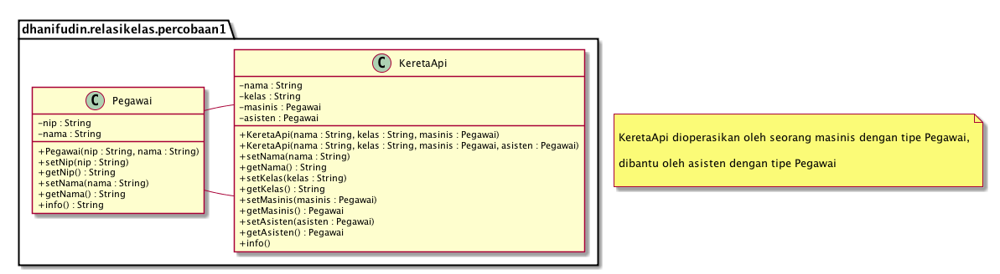
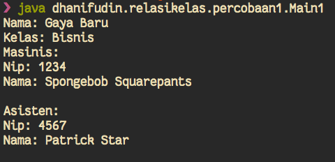
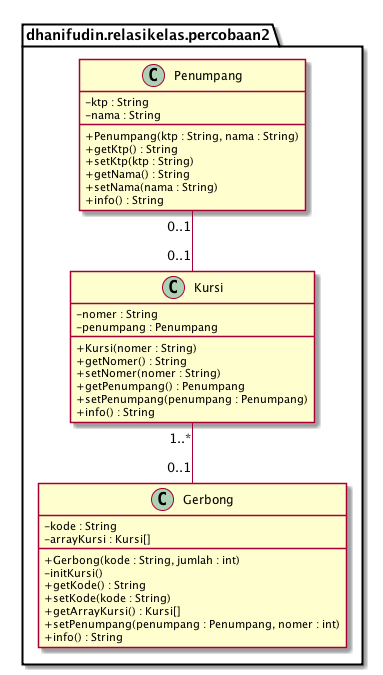
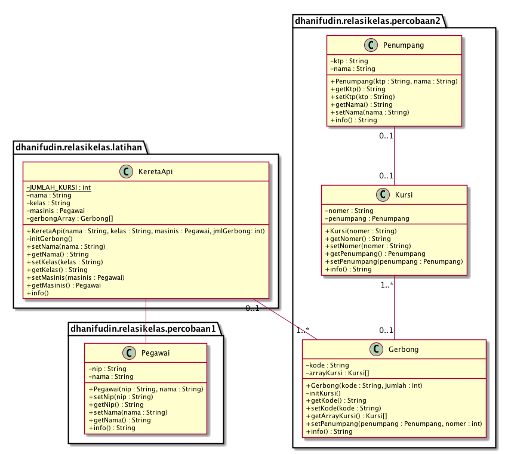

Jobsheet 08
Relasi Kelas
Table of Contents
1 Kompetensi
Setelah menempuh pokok bahasan ini, mahasiswa mampu:
- Memahami konsep relasi kelas.
- Mengimplementasikan relasi has-a dalam program.
2 Pendahuluan
Pada percobaan-percobaan sebelumnya, relasi dalam class dinyatakan dalam one-to-one. Tetapi ada kalanya relasi class melibatkan lebih dari satu. Hal ini disebut dengan multiplicity. Untuk relasi lebih detil mengenai multiplicity, dapat dilihat pada tabel berikut.
| Multiplicity | Keterangan |
|---|---|
| 0..1 | 0 atau 1 instance |
| 1 | Tepat 1 instance |
| 0..* | 0 atau lebih instance |
| 1..* | Setidaknya 1 instance |
| n | Tepat n instance (n diganti dengan sebuah angka) |
| m..n | Setidaknya m instance, tetapi tidak lebih dari n |
3 Percobaan
3.1 Percobaan 1
3.1.1 Langkah Percobaan
Sebuah Kereta Api dioperasikan oleh Masinis serta seorang Asisten Masinis. Baik Masinis maupun Asisten Masinis keduanya merupakan Pegawai PT. Kereta Api Indonesia. Dari ilustrasi cerita tersebut, dapat digambarkan dalam diagram kelas sebagai berikut:

Package digunakan untuk mengorganisasi class-class (biasanya berdasarkan fungsinya). Penamaan package menggunakan lowercase. Pada umumnya, nama package diawali oleh identitas pembuat class (pribadi ataupun organisasi). Gunakan identitas anda dalam package pada percobaan dalam jobsheet ini!
- Perhatikan dan pahami kelas diagram di atas! Kemudian buka aplikasi teks editor anda!
Buatlah class Pegawai
package dhanifudin.relasikelas.percobaan1; public class Pegawai { }
Tambahkan atribut-atribut ke dalam class Pegawai
... private String nip; private String nama; ...
Buat constructor untuk class Pegawai
... public Pegawai(String nip, String nama) { this.nip = nip; this.nama = nama; } ...
Tambahkan setter dan getter untuk atribut nip.
... public String getNip() { return this.nip; } public void setNip(String nip) { this.nip = nip; } ...
- Kemudian implementasikan setter dan getter untuk atribut nama.
Implementasikan method info() dengan mengetikkan kode berikut
... public String info() { String info = ""; info += "Nip: " + this.nip + "\n"; info += "Nama: " + this.nama + "\n"; return info; } ...
- Compile class Pegawai dengan perintah javac (jika menggunakan IDE, anda dapat menekan tombol build). Jika tidak ada error lanjutkan untuk membuat class KeretaApi.
Buat class KeretaApi berdasarkan diagram class.
package dhanifudin.relasikelas.percobaan1; public class KeretaApi { }
Tambahkan atribut-atribut pada class KeretaApi, nama, kelas, masinis dan asisten.
... private String nama; private String kelas; private Pegawai masinis; private Pegawai asisten; ...
Tambahkan constructor pada class KeretaApi
... public KeretaApi(String nama, String kelas, Pegawai masinis) { this(nama, kelas, masinis, null); } public KeretaApi(String nama, String kelas, Pegawai masinis, Pegawai asisten) { this.nama = nama; this.kelas = kelas; this.masinis = masinis; this.asisten = asisten; } ...
Tambahkan setter dan getter untuk atribut nama kereta api.
... public void setNama(String nama) { this.nama = nama; } public String getNama() { return this.nama; } ...
- Kemudian implementasikan juga setter dan getter untuk masing-masing atribut kelas, masinis serta asisten.
Implementasikan method info()
... public String info() { String info = ""; info += "Nama: " + this.nama + "\n"; info += "Kelas: " + this.kelas + "\n"; info += "Masinis: \n" + this.masinis.info() + "\n"; info += "Asisten: \n" + this.asisten.info() + "\n"; return info; } ...
Buatlah sebuah class Main1 dalam package yang sama.
package dhanifudin.relasikelas.percobaan1; public class Main1 { public static void main(String args[]) { Pegawai masinis = new Pegawai("1234", "Spongebob Squarepants"); Pegawai asisten = new Pegawai("4567", "Patrick Star"); KeretaApi keretaApi = new KeretaApi("Gaya Baru", "Bisnis", masinis, asisten); System.out.println(keretaApi.info()); } }

3.1.2 Pertanyaan
- Dalam method info() pada class KeretaApi, baris this.masinis.info() dan this.asisten.info() digunakan untuk apa?
Buatlah main program baru dengan nama class Main2 pada package yang sama.
package dhanifudin.relasikelas.percobaan1; public class Main2 { public static void main(String args[]) { Pegawai masinis = new Pegawai("1234", "Spongebob Squarepants"); KeretaApi keretaApi = new KeretaApi("Gaya Baru", "Bisnis", masinis); System.out.println(keretaApi.info()); } }
- Apa hasil output dari main program tersebut? Mengapa hal tersebut dapat terjadi?
- Tanpa merubah main program, perbaiki kode sehingga program dapat berjalan!
3.2 Percobaan 2
3.2.1 Langkah Percobaan

- Perhatikan dan pahami diagram class tersebut.
- Kemudian buka aplikasi teks editor.
Buatlah class Penumpang dalam package percobaan2 (sesuaikan dengan nama package anda.)
package dhanifudin.relasikelas.percobaan2; public class Penumpang { private String ktp; private String nama; }
Tambahkan constructor ke dalam class Penumpang
... public Penumpang(String ktp, String nama) { this.ktp = ktp; this.nama = nama; } ...
- Untuk setiap atribut, buatlah masing-masing setter dan getter.
Implementasikan method info() ke dalam class Penumpang
... public String info() { String info = ""; info += "Ktp: " + ktp + "\n"; info += "Nama: " + nama + "\n"; return info; } ...
Buat file class Kursi dalam package yang sama
package dhanifudin.relasikelas.percobaan2; public class Kursi { private String nomer; private Penumpang penumpang; }
Tambahkan constructor pada class Kursi
... public Kursi(String nomer) { this.nomer = nomer; } ...
- Tambahkan masing-masing atribut yang ada dalam class Kursi
Implementasikan method info()
... public String info() { String info = ""; info += "Nomer: " + nomer + "\n"; if (this.penumpang != null) { info += "Penumpang: " + penumpang.info() + "\n"; } return info; } ...
Buat class Gerbong berikut atribut-atribut kode serta kursi yang bertipe data Array.
package dhanifudin.relasikelas.percobaan2; public class Gerbong { private String kode; private Kursi arrayKursi[]; }
Tambahkan constructor ke dalam class Gerbong.
public Gerbong(String kode, int jumlah) { this.kode = kode; this.arrayKursi = new Kursi[jumlah]; // Digunakan untuk inisialisasi kursi yang ada dalam array this.initKursi(); }
Inisialisasi kursi dengan menggunakan method initKursi()
... private void initKursi() { for (int i = 0; i < arrayKursi.length; i++) { this.arrayKursi[i] = new Kursi(String.valueOf(i + 1)); } } ...
Tambahkan setter dan getter untuk kelas Gerbong.
... public String getKode() { return kode; } public void setKode(String kode) { this.kode = kode; } public Kursi[] getArraykursi() { return arrayKursi; } ...
Implementasikan method info()
... public String info() { String info = ""; info += "Kode: " + kode + "\n"; for (Kursi kursi : arrayKursi) { info += kursi.info(); } return info; } ...
Implementasikan method untuk memasukkan penumpang sesuai dengan nomer kursi.
... public void setPenumpang(Penumpang penumpang, int nomer) { this.arrayKursi[nomer - 1] .setPenumpang(penumpang); } ...
Buat class dengan nama Percobaan2, tambahkan method main.
package dhanifudin.relasikelas.percobaan2; public class Percobaan2 { public static void main(String args[]) { Penumpang p = new Penumpang("12345", "Mr. Krab"); Gerbong gerbong = new Gerbong("A", 10); gerbong.setPenumpang(p, 1); System.out.println(gerbong.info()); } }
3.2.2 Pertanyaan
- Pada main program dalam class Percobaan2, berapakah jumlah kursi dalam Gerbong A?
Perhatikan potongan kode pada method info() dalam class Kursi. Apa maksud kode tersebut?
... if (this.penumpang != null) { info += "Penumpang: " + penumpang.info() + "\n"; } ...
- Mengapa pada method setPenumpang() dalam class Gerbong, nilai nomer dikurangi dengan angka 1?
- Instansiasi obyek baru budi dengan tipe Penumpang, kemudian masukkan obyek baru tersebut pada gerbong dengan gerbong.setPenumpang(budi, 1). Apakah yang terjadi?
- Modifikasi program sehingga, tidak diperkenankan untuk menduduki kursi yang sudah ada penumpang lain!
4 Latihan

Untuk menggunakan class dalam package yang berbeda, dapat digunakan keyword import. Contoh: import dhanifudin.relasikelas.percobaan1.Pegawai;
Buatlah class baru KeretaApi pada package latihan.
package dhanifudin.relasikelas.latihan; public class KeretaApi { // Konstanta dalam java private static final int JUMLAH_KURSI = 10; private String nama; private String kelas; private Pegawai masinis; private Gerbong gerbongArray[]; }
Tambahkan constructor KeretaApi
public KeretaApi(String nama, String kelas, Pegawai masinis, int jmlGerbong) { this.nama = nama; this.kelas = kelas; this.masinis = masinis; this.gerbongArray = new Gerbong[jmlGerbong]; this.initGerbong(); }
Implementasikan method initGerbong()
private void initGerbong() { for (int i = 0; i < gerbongArray.length; i++) { gerbongArray[i] = new Gerbong(String.valueOf((char)((int) 'A' + i)), KeretaApi.JUMLAH_KURSI); } }
- Tambahkan method sehingga penumpang dapat memesan KeretaApi sesuai dengan gerbong dan nomer yang diinginkan!
- Tampilkan informasi mengenai detail KeretaApi meliputi nama Penumpang dalam setiap gerbong, berikut jumlah kursi yang masih tersedia!